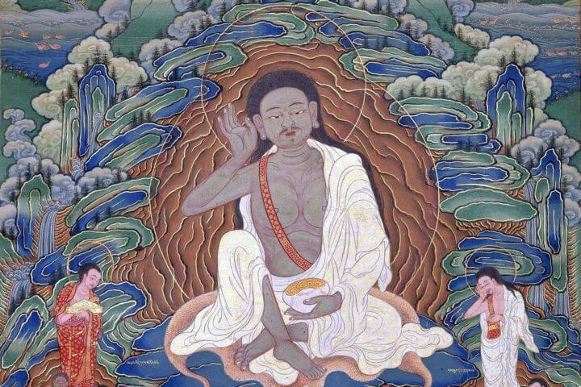

Milarepa nació en Tibet y, tras una juventud marcada por la venganza y la oscuridad, buscó redimirse a través del dharma. Aprendió meditación con su maestro Marpa, quien lo desafió con duras pruebas que casi quebraron su cuerpo y su espíritu. Pero Milarepa persistió, soportando tormentas, soledad y años de ardua práctica. Finalmente, alcanzó la iluminación. Desde su cueva en las montañas, cantaba canciones que enseñaban compasión y liberación, recordando que incluso el pasado más oscuro puede transformarse en luz pura si se practica con coraje y disciplina.